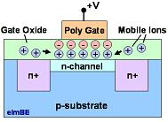

Mobile Ionic Contamination
(MIC)
refers to the
presence of ionic contaminants in the active circuitries of
semiconductor devices, the most common of which are alkali ions
such as Na+, K+,
and
Cl-. It is
usually observed in gate oxide layers of MOS transistors. These
contaminant ions are free to move about, hence the phrase 'mobile ionic
contamination.'
This mobility is accelerated by
temperature
and
electric
field.
The mobile ions often enter
the gate oxide through the interface between the gate (usually metal or
polysilicon) and the gate oxide (usually SiO2).
Some of the ions then drift to the Si-SiO2 interface under
the influence of electric fields created by voltages applied to the
gate. Given the high mobility of these ions in SiO2,
they can drift under field assistance even at room temperature.
The presence of these ionic
contaminants at the gate-oxide and oxide-semiconductor interfaces and in
the oxide itself results in a mobile ionic charge,
Qm, which
can cause long-term changes in the threshold voltage, VT, of
the transistor. The VT
shift aggravates as more charges accumulate at the Si/SiO2
interface.
According to
S. Wolf and R. N. Tauber, a Qm value in the low 1010/cm2
range will cause a shift of only a few tenths of a volt for a MOS
device with a gate oxide of 1000 angstroms. However, a Qm value in
the 1010/cm2
range can result in VT shifts of
several volts. Thus,
reducing Qm density should be a key ingredient of any program designed
to eliminate MIC failures.
A high Qm
value can also promote the formation of conducting channels that
increase leakage currents. Gain reduction due to mobile ionic
contamination has likewise been observed. Bipolar devices can also
experience beta degradation due to the presence of mobile ionic
contaminants, mainly because these can change carrier concentrations.

Figure 1.
The mobile ionic contaminants present in the gate oxide can
accumulate as
an ionic charge that affects the channel of a MOS transistor.
Among the common
contaminants, Na+
exhibits the greatest mobility due to its small atomic radius. It
is also usually the first mobile ionic contaminant to suspect if MIC is
being dealt with because Na+
is widely distributed, being present in air and in human byproducts such
as perspiration and saliva.
In general, mobile ionic
contaminants come from: 1) the environment; 2) humans; 3) processing
chemicals such as etchants; 4) processing equipment such as
furnaces; and 5) even from assembly materials such as
lead frames and adhesives if the device's protective
surface layers are inadequate or defective.
The most
common sources of Na+
contamination during wafer fabrication, however, include: 1) gate
or contact metallization; 2) oxidation and annealing furnaces and gases;
3) diffusion furnaces and gases; 4) photoresist bake; 5) incomplete
resist stripping; and 6) contaminated chemicals used in wafer cleaning.
It is therefore necessary to minimize the introduction of Na+
ions from these wafer fab
sources in order to reduce the risk of failures due to mobile ionic
contamination.
Mobile
ionic contamination pose a serious
reliability risk
that needs
immediate attention. Failures can occur after electrical testing, or
even after affected devices have been operating in in the field for
quite a while. Fortunately, lots affected by mobile ionic contamination
are easy to identify.
These
contaminated lots will degrade or fail after being subjected to burn-in,
since the high temperature and electrical bias of the said stress test
will accelerate mobile ionic charging at the Si-SiO2 interface, causing
VT
shifts and high leakage currents. These burn-in-induced failures are
recoverable
by an unbiased bake, which tends to scatter the mobile ions and relocate
most of them back to the gate-SiO2
interface. Thus, a tell-tale sign that a device is suffering from
mobile ionic contamination is if it's failing after burn-in, and then
becoming good again after bake.
The
failure
analysis
(FA) process for suspected
MIC-induced failures is likewise not complicated. Once a lot has been
verified to exhibit failure after burn-in which recover after bake, the
worst failures are taken for use as FA samples. Bench testing and
curve tracing should confirm that these samples exhibit failure modes
that are associated with mobile ionic charging, e.g., VT
shifts or high leakage currents.
Photoemission
microscopy may also show line emissions (not point emissions) around the
gate area of the affected MOS components. Affected areas may then
be subjected to EDX analysis for identification
not only of the mobile ions present, but possibly their source as well.
A commonly encountered EDX spectrum for MIC cases will show peaks of one
or more of the following elements: Na, Cl, K, P, Ca, and S. Human
spittle is a potential source if this spectrum is revealed, while the
same spectrum without the S peak may point to human perspiration.
Ensuring a
clean wafer fab process alone is not enough to prevent mobile ionic
contamination, since mobile ions from external sources after wafer
fabrication can easily seep into devices. The solution to this problem
is to protect the device from these external contaminants by depositing
protective layers over the die surface.
For instance,
a phosphosilicate glass (PSG) layer can act as a
getter or
Na+
ions, making it a practical choice for interlevel dielectric between the
gate and the metal level. Silicon nitride is often used as the
final surface passivating layer of the die, since this material is not
only mechanically resistant, but impervious to
Na+ as well.
A wide range of values for
the activation energy of mobile ionic contamination failures have been
observed, but 1 eV is typically used.
See
Also:
Die Failures;
Failure Analysis; Reliability Models
HOME
Copyright © 2004
www.EESemi.com.
All Rights Reserved.